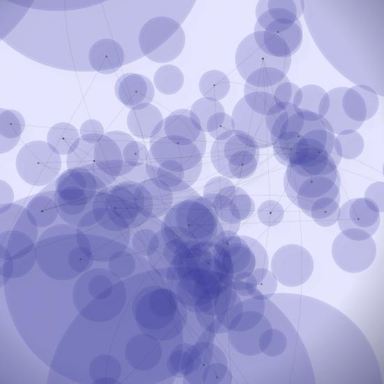

Posted by Shurik on Mar 14, 2008
I was about to try this and got a 404!
Posted by Tom De Smedt on Mar 21, 2008
Hi Dan,
Nice to see you're so enthusiastic!
Please also take a look at our Qt prototype:
http://dev.nodebox.net/browser/nodebox/branches/try-qt
We already have a number of people proposing cross-platform versions in a number of different framework combinations.
It would help out immensely if you could focus your future efforts on the Qt release. This helps both us and you, because we can all work on one single cross-platform version, avoiding fragmentation of the NodeBox-community.
Check it out, and let us know what you think!
Best,
Tom

NodeBox running on Windows
Posted by dan v. on Jan 13, 2008
I've had a go at porting console.py to run on Windows with IronPython and the mono Cairo bindings. The command line version mostly works so I thought I'd share it. You can get a package of the lot here.
It is not complete and has some limitations - no text api support, no cmyk support, only png export and no appkit support. I would like to improve it by adding a gui at some point, maybe even some alternative backends.
It shouldn't be too much effort to get this working on Linux too, but I don't have access to a linux box at the moment. Another possibility is modifying the cairo code to work with CPython.
Anyway, I hope someone finds it useful. If you make some improvements to it please let me know!